Encontrá tu versión y contáctanos.
Seleccioná la versión que más te guste.
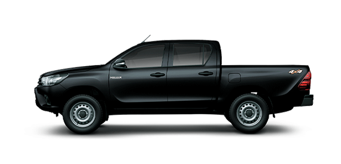
DX 4X4 AT
$59.739.000
DX 4X4 MT
$58.116.000
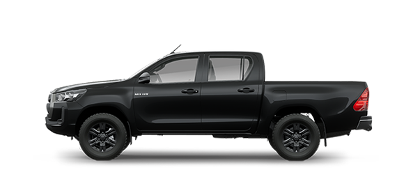
SR 4X4 AT
$69.742.000
SR 4X4 MT
$66.856.000
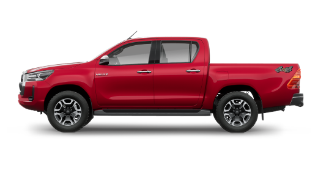
SRV+ 4X4 AT
$80.317.000
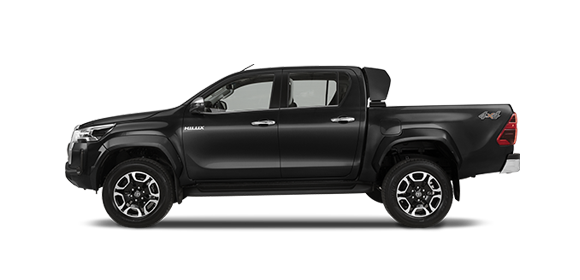
SRX AT 4X4
$84.855.000
Razones para tener una Hilux
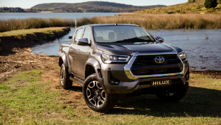
DISEÑO EXTERIOR
Se destacan los faros delanteros Bi - LED, luces diurnas (DRL) y antiniebla de LED junto con las llantas de aleación de 17” y 18”
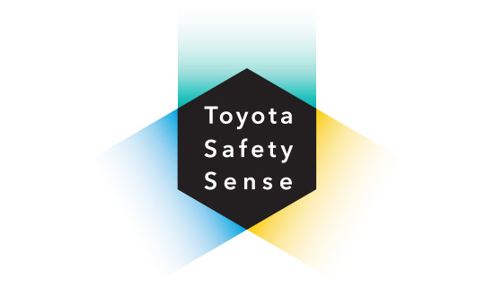
TOYOTA SAFETY SENSE
Yaris ofrece, en las versión S, Sistema de Pre-colisión frontal (PCS)* y Sistema de alerta de cambio de carril (LDA)*. Estos sistemas avanzados de asistencia a la conducción complementan al conductor en diversas situaciones de peligro para mitigar o evitar accidentes de tránsito.
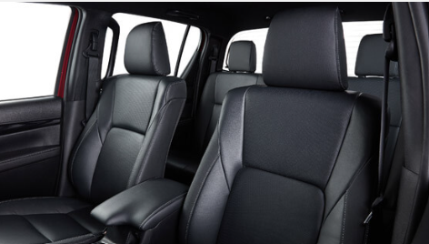
CONFORT INTERIOR
Las versiones SRX cuentan con tapizado de cuero natural y ecológico con función de ventilación en butacas delanteras. Mientras que todas las versiones están equipadas con sensores de estacionamiento delanteros y traseros y aire acondicionado con climatizador automático digital bizona.
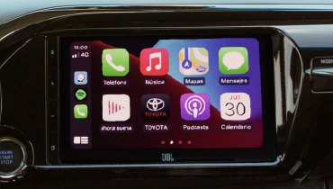
TECNOLOGÍA
Las versiones SRX cuentan con Sistema de Ingreso inteligente (Smart Entry System), Sistema de encendido por botón (Push Start Button) y Sistema de visión 360° en pantalla de audio.
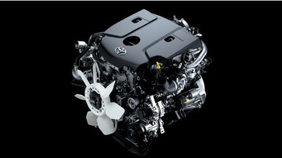
MOTOR Y PERFORMANCE
Motor 2.8l con 204 CV. Para maximizar la capacidad off-road, el bloqueo de diferencial trasero, disponible en todas las versiones 4x4, permite distribuir en partes iguales el torque para que las ruedas posteriores giren a la misma velocidad sin tener en cuenta las diferencias de tracción.
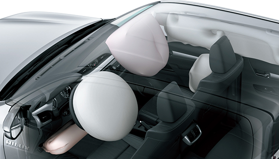
SEGURIDAD
Todas las versiones vienen equipadas con 7 airbags: frontales y laterales para los pasajeros delanteros, de rodilla para el conductor, y de cortina delanteros y traseros, brindando un ambiente seguro para todos los ocupantes.
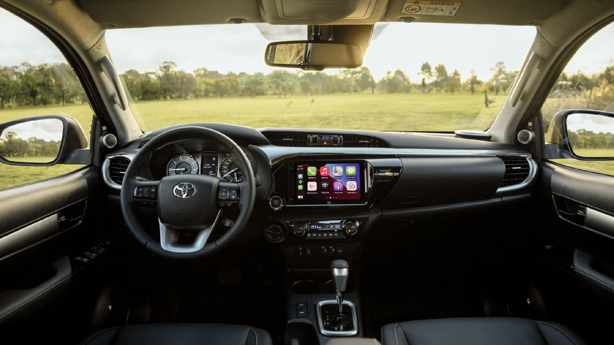
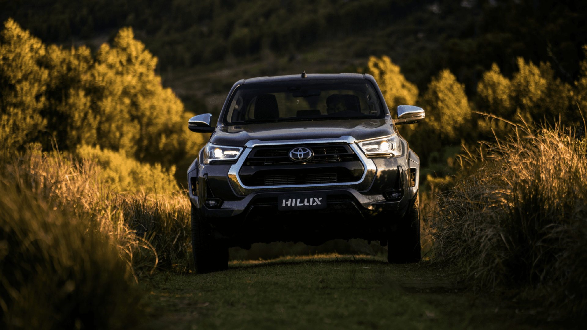

CONFORT Y TECNOLOGIA
Todas las versiones de Hilux cuentan pantalla táctil de 9” con USB, Bluetooth® y conectividad inalámbrica Android Auto® y Apple CarPlay®**. Las versiones SRV y SRX cuentan con cargador inalambrico para smartphones, USB tipo C en plazas traseras (x2) y paquete de servicios conectados*.
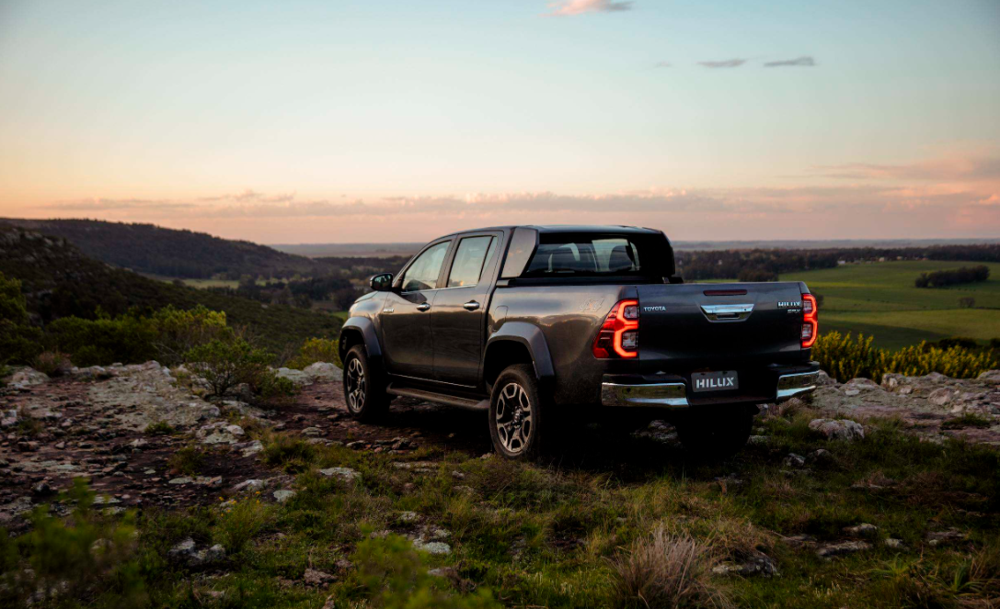
PERFORMANCE
Todas las Hilux viene equipadas con Asistente de arranque en pendientes (HAC), que evita el deslizamiento involuntario y asegura un arranque suave y controlado en pendiente. Además, las versiones 4x4 cuentan con A-TRC que permite un óptimo avance en terrenos resbaladizos.